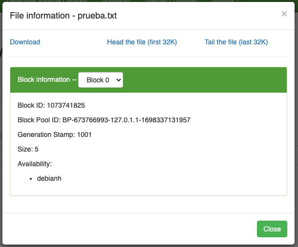

UD02 4. Comandos HDFS
⚠️ Hay que asegurarse que esté arrancado HDFS.
Mostramos todas las opciones posibles del comando hdfs dfs
$ hdfs dfs #Muestra todos los comandos posibles (**emula comandos linux**)
# Este comando se encuentra dentro de /opt/hadoop/bin
-
Salida del comando
Usage: hadoop fs [generic options] [-appendToFile [-n] <localsrc> ... <dst>] [-cat [-ignoreCrc] <src> ...] [-checksum [-v] <src> ...] [-chgrp [-R] GROUP PATH...] [-chmod [-R] <MODE[,MODE]... | OCTALMODE> PATH...] [-chown [-R] [OWNER][:[GROUP]] PATH...] [-concat <target path> <src path> <src path> ...] [-copyFromLocal [-f] [-p] [-l] [-d] [-t <thread count>] [-q <thread pool queue size>] <localsrc> ... <dst>] [-copyToLocal [-f] [-p] [-crc] [-ignoreCrc] [-t <thread count>] [-q <thread pool queue size>] <src> ... <localdst>] [-count [-q] [-h] [-v] [-t [<storage type>]] [-u] [-x] [-e] [-s] <path> ...] [-cp [-f] [-p | -p[topax]] [-d] [-t <thread count>] [-q <thread pool queue size>] <src> ... <dst>] [-createSnapshot <snapshotDir> [<snapshotName>]] [-deleteSnapshot <snapshotDir> <snapshotName>] [-df [-h] [<path> ...]] [-du [-s] [-h] [-v] [-x] <path> ...] [-expunge [-immediate] [-fs <path>]] [-find <path> ... <expression> ...] [-get [-f] [-p] [-crc] [-ignoreCrc] [-t <thread count>] [-q <thread pool queue size>] <src> ... <localdst>] [-getfacl [-R] <path>] [-getfattr [-R] {-n name | -d} [-e en] <path>] [-getmerge [-nl] [-skip-empty-file] <src> <localdst>] [-head <file>] [-help [cmd ...]] [-ls [-C] [-d] [-h] [-q] [-R] [-t] [-S] [-r] [-u] [-e] [<path> ...]] [-mkdir [-p] <path> ...] [-moveFromLocal [-f] [-p] [-l] [-d] <localsrc> ... <dst>] [-moveToLocal <src> <localdst>] [-mv <src> ... <dst>] [-put [-f] [-p] [-l] [-d] [-t <thread count>] [-q <thread pool queue size>] <localsrc> ... <dst>] [-renameSnapshot <snapshotDir> <oldName> <newName>] [-rm [-f] [-r|-R] [-skipTrash] [-safely] <src> ...] [-rmdir [--ignore-fail-on-non-empty] <dir> ...] [-setfacl [-R] [{-b|-k} {-m|-x <acl_spec>} <path>]|[--set <acl_spec> <path>]] [-setfattr {-n name [-v value] | -x name} <path>] [-setrep [-R] [-w] <rep> <path> ...] [-stat [format] <path> ...] [-tail [-f] [-s <sleep interval>] <file>] [-test -[defswrz] <path>] [-text [-ignoreCrc] <src> ...] [-touch [-a] [-m] [-t TIMESTAMP (yyyyMMdd:HHmmss) ] [-c] <path> ...] [-touchz <path> ...] [-truncate [-w] <length> <path> ...] [-usage [cmd ...]] Generic options supported are: -conf <configuration file> specify an application configuration file -D <property=value> define a value for a given property -fs <file:///|hdfs://namenode:port> specify default filesystem URL to use, overrides 'fs.defaultFS' property from configurations. -jt <local|resourcemanager:port> specify a ResourceManager -files <file1,...> specify a comma-separated list of files to be copied to the map reduce cluster -libjars <jar1,...> specify a comma-separated list of jar files to be included in the classpath -archives <archive1,...> specify a comma-separated list of archives to be unarchived on the compute machines The general command line syntax is: command [genericOptions] [commandOptions]
Visualizamos el contenido actual del sistema de ficheros HDFS.
Ejercicio 1:
- Crear un fichero simple en local (prueba.txt).
- Crear un directorio en el sistema de ficheros DFS (temporal)
- Copiar el archivo que hemos creado al directorio remoto.
-
Solución
Desde el explorador la web de administración, podemos ver información del archivo y bloques.

Nos fijamos en Bloock ID y Bloock Pool
-
¿Cómo hacerlo a través de un comando?
$ hdfs fsck /hola.txt -files -blocks Connecting to namenode via http://debianh:9870/fsck?ugi=hadoop&files=1&blocks=1&path=%2Fhola.txt FSCK started by hadoop (auth:SIMPLE) from /127.0.0.1 for path /hola.txt at Mon Nov 06 14:08:52 CET 2023 /hola.txt 5 bytes, replicated: replication=1, 1 block(s): OK 0. **BP-673766993-127.0.1.1-1698337131957**:blk_**1073741825**_1001 len=5 Live_repl=1
Ahora vamos a comprobar cómo HDFS ha guardado el archivo en local. Para ello vamos a:
Encontraremos una carpeta con el mismo nombre que el Bloock Pool, en mi caso entraré con:
cd BP-673766993-127.0.1.1-1698337131957
# Accedemos a sus subdirectorios
cd current/finalized/subdir0/subdir0/
En este momento podremos ver el bloque que debe encajar con el Block ID